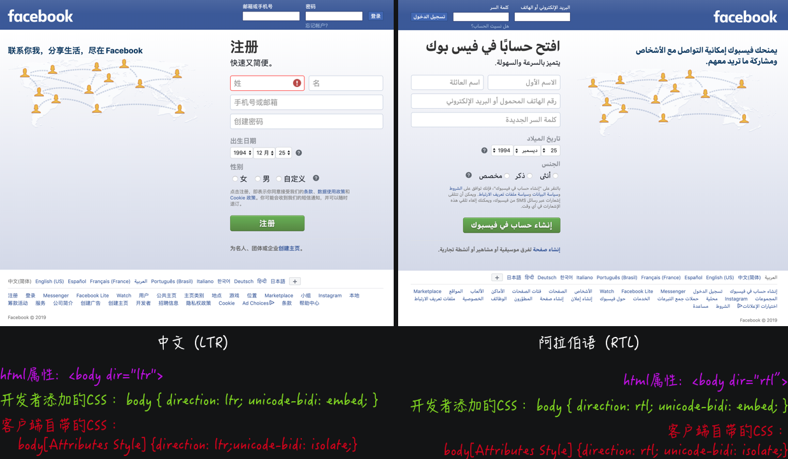
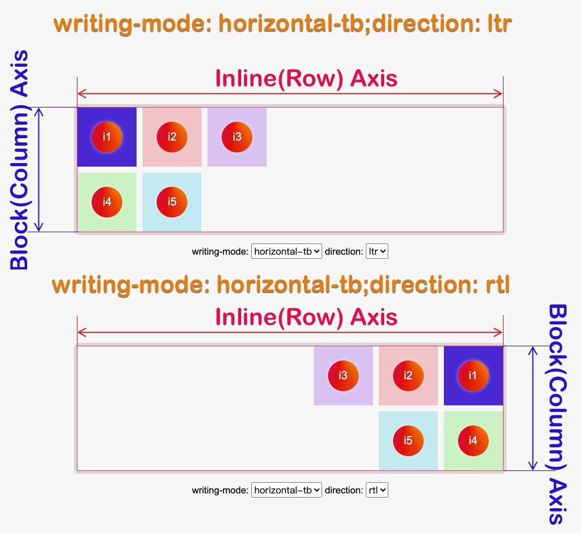
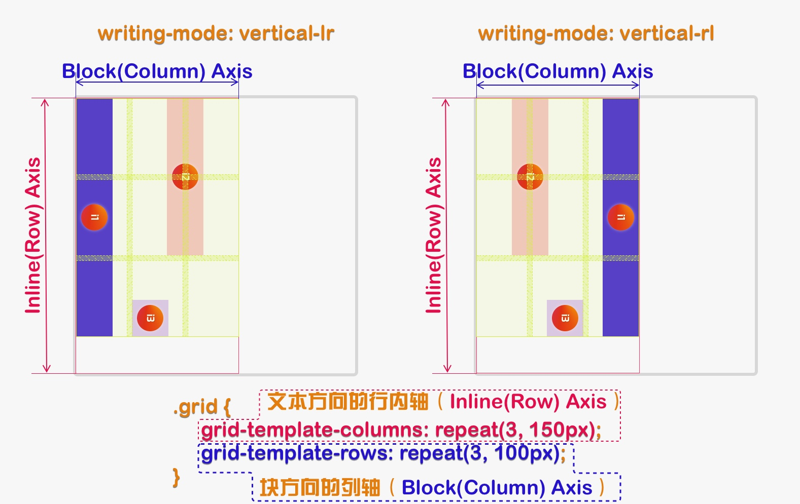
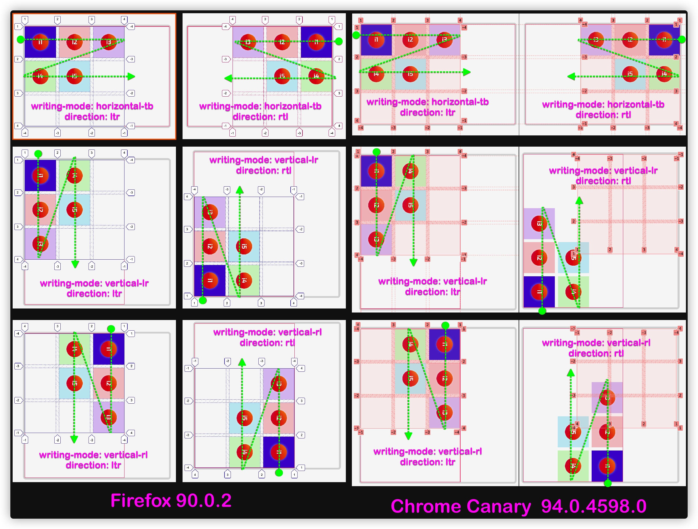

图解CSS: Grid布局（Part14）
作者：大漠 日期：2021-08-06 点击：480
特别声明：如果您喜欢小站的内容，可以点击申请会员进行全站阅读。如果您对付费阅读有任何建议或想法，欢迎发送邮件至: airenliao@gmail.com!或添加QQ：874472854(^_^)
* 文本为付费内容（4.99元），您已获得全文阅读权限
前面和大家一起讨论的都是在物理属性和ltr（Left-To-Right）书写模式（或阅读模式）下的网格布局。接下来，在这部分将和大家一起探讨网格布局遇上逻辑属性和书写模式下的表现。
逻辑属性与物理属性及逻辑值与物理值
对于大多数 Web 开发者（或 CSSer）而言，更为熟悉的是物理属性，比如width、height、top、right、bottom、left等。但我们在图解 CSS 系列中的《CSS逻辑属性》一章中和大家聊过 CSS 逻辑属性和逻辑值，以及逻辑属性与物理属性，逻辑值与物理值之间的对应关系：
这么多年以来，在开发Web的时候用得都是物理属性为主，即使在开发多种语言的网站时，也主要采用物理属性和对应的物理值，只不过相对麻烦一些：

比如说，下面这样的两种不同语言版本的布局效果：
需要在 <html> 元素上添加 dir="rtl" 声明，然后在不同的两种语言方式下设置样式：
.avatar {
margin-right: 1rem;
}
html[dir="rtl"] .avatar {
margin-right: 0;
margin-left: 1rem;
}
但如果我们换成CSS逻辑属性，这一切会变得简单地很多：
.avatar {
margin-inline-end: 1rem;
}
一行代码就可以达到想要的效果：
有关于多语言排版更详细的介绍，可以阅读《Web中向左向右》一文。
正如上面示例所示，逻辑属性和值不会预设方向，这也是为什么网格布局中要实现对齐到容器开始位置时使用start关键字的原因。对于我们来说（汉语），习惯了从左往右的书写和阅读方式（ltr），所以start就是左侧，不过这并不是说它总是代表左侧，并不能根据start这个词推断出物理位置。
块和行内
如果我们用逻辑属性不用物理属性时，就不能仅使用从左到右，从上到下的方式观察世界，我们需要新的参考点，也就是在介绍网格布局中重要术语和概念的时候专门介绍的块轴（Block Axis）和行内轴（Inline Axis）。理解它们是非常重要的，如果开始用块轴与行内轴的方式来看到布局，在网格布局中使用到的术语就变得非常有意义了。
书写模式
CSS 书写模式是 CSS的一个独立的模块，详细描述了如何在 CSS 中使用多种不同的书写模式，不仅是支持与汉语不同书写模式的语言，而且还提供了更富创造性的用途。通过使用writing-mode属性来改变书写模式：
正如上图所示，CSS 的 writing-mode 不仅可以使用文字从左到右或从右到左显示，还可以设置其他的文字流动方向。该属性可选的值主要有horizontal-tb、vertical-rl、vertical-lr、sideways-rl和sideways-lr。
writing-mode能很好的和块轴、行内轴、阅读模式以及书写模式结合起来：
我们可以换过一种方式来理解：
- 块轴：主要定义网站文档（元素块）流，CSS的书写模式
writing-mode会影响块轴的方向 - 内联轴：主要定义网站的文本流方向，也就是文本的阅读方式，CSS的
direction或HTML的dir会影响内联轴的方向
接下来，将通过使用writing-mode属性来改变网格的书写模式，演示逻辑值是如何工作的。
网格布局中的书写模式
为了更好的阐述书写模式是如何改变你对块轴和行内轴的看法，我们通过示例来展示，这样更易于理解。比如：
.grid__container {
display: grid;
grid-template-columns: repeat(3, 100px);
grid-template-rows: repeat(2, 100px);
gap: 10px;
}
使用 grid-template-columns 和 grid-template-rows 显式定义了一个两行三列的网格，也就是说有三个沿着行内轴方向（文本方向的行轴）的轨道，即网格列轨道，两个沿着块轴方向（块方向的列轴）的轨道，即网格行轨道。在默认的书写模式下（ltr，或 writing-mode为horizontal-tb），网格自动定位网格项目的流向，是从左上角开始，向右延伸，填满行内轴方向的三个格子，然后转到下一行，创建一个新的行轨道，继续放置更多的网格项目：
如果我们给网格容器加上 writing-mode的值为vertical-lr属性，就可以看到块轴和行内轴都转到不同的方向，块轴变成从左到右，行内轴变成从上到下。
.grid__container {
writing-mode: vertical-lr;
}
你可以尝试着把writing-mode更换成其他的值：
调整示例中writing-mode的值，你将看到效果如下：
排版方式除了受writing-mode影响之外，还会受direction的影响，该属性的ltr（Left-To-Right）和 rtl（Right-To-Left）可以设置用户的阅读方式。比如说，即使writing-mode设置了值为 horizontal-tb，排版上也还会受 direction 的影响。那么，在网格系统中，writing-mode和direction的结合，会给网格布局带来怎么样的变化呢？我们在上面的示例基础上，添加direction属性的设置：
.grid__container {
writing-mode: horizontal-tb;
direction: ltr; // 或 trl
}

在writing-mode为horizontal-tb时，direction取值不同，网格项目自动放置流向有所差异：
ltr：网格自动定位网格项目的流向，是从左上角开始，向右延伸，填满行内轴方向的三个格子，然后转到下一行，创建一个新的行轨道，继续放置更多的网格项目rtl：网格自动定位网格项目的流向，是从右上角开始，向左延伸，填满行内轴方向的三个格子，然后转到下一行，创建一个新的行轨道，继续放置更多的网格项目
writing-mode和direction 结合对表格的影响如下面这个示例所示：
调整示例中writing-mode和direction的值，网格布局的变化如下所示：
用于对齐的逻辑值
在网格布局中的对齐一节中和大家一起探讨过网格项目和网格轨道的对齐，在对齐属性可以用的属性值有，start、end、center等，它们都是逻辑值。
加上块轴和行内轴可以改变方向，所以在对齐属性中使用逻辑值就显得更有意义了。
比如，下面这个 3 x 3的网格，在网格容器上显式设置writing-mode: vertical-lr。我们将使用对齐属性来对齐网格项目。start 和 end 值仍然像在默认的书写模式下那样保留着它们的逻辑，但却已经不是 left 和 right，top 和 bottom 所能够表示的了。
.grid__container {
display: grid;
grid-template-columns: repeat(3, 150px);
grid-template-rows: repeat(3, 100px);
gap: 10px;
writing-mode: vertical-lr;
}
.grid__item:nth-child(1) {
grid-column: 1 / 4;
align-self: start;
}
.grid__item:nth-child(2) {
grid-column: 1 / 3;
grid-row: 2 / 4;
align-self: center;
}
.grid__item:nth-child(3) {
grid-column: 3;
grid-row: 2 / 4;
align-self: start;
justify-self: end;
}

如果你把vertical-lr 换成 vertical-rl，你看到效果如下：

我们在上面的基础上，加上writing-mode和direction：
调整示例中writing-mode和direction你可以看到对齐属性的逻辑值会跟着变化：
简单地说，对齐方式中的逻辑值总是会跟着writing-mode和direction变化。
网格项目自动放置和书写模式
通过前面的学习，我们知道在网格布局中，网格项目自动放置是从左上角开始，网格项目沿着行内轴（文本阅读方向的行内轴，即Inline Axis）自左向右排列，直到最右侧没有空余网格单元时，网格项目会自动换行，继续从左向右排列。比如：
.grid__container {
display: grid;
grid-template-columns: repeat(3, 100px);
grid-template-rows: repeat(3, 100px);
gap: 10px;
}
当 writing-mode 和 direction 取不同值时，网格项目自动放置是有所差异的：
writing-mode为horizontal-tb且direction为ltr，网格项目从左上角开始，自左向右自动放置网格项目，当到最右侧边缘（无空的网格区域放置网格项目时）无法再放置网格项目时，会另起一行，重新自左向右自动放置网格项目writing-mode为horizontal-tb且direction为rtl，网格项目从右上角开始，自右向左自动放置网格项目，当到最左侧边缘无法再放置网格项目时，会另一行，重新自右向左自动放置网格项目writing-mode为vertical-lr且direction为ltr，网格项目从左上角开始，自上向下自动放置网格项目，当到最底部边缘无法再放置网格项目时，会在右侧另起一列，重新自上向下自动放置网格项目writing-mode为vertical-lr且direction为rtl，网格项目从左下角开始，自下向上自动放置网格项目，当到最顶部边缘无法再放置网格项目时，会在右侧另起一列，重新自下向上自动放置网格项目writing-mode为vertical-rl且direction为ltr，网格项目从右上角开始，自上向下自动放置网格项目，当到最底部边缘无法再放置网格项目时，会在左侧另起一列，重新自上向下自动放置网格项目writing-mode为vertical-rl且direction为rtl，网格项目从右下角开始，自下向上自动放置网格项目，当到最顶部边缘无法再放置网格项目时，会在左侧另起一列，重新自下向上自动放置网格项目
用下图来表述会更清晰一些：

基于网格线放置网格项目和书写模式
在 CSS 网格布局中，当用网格线数字索引号来放置网格项目的时候，不管 writing-mode 为何值，数字索引号 1 永远代表开始的网格线（行或列），数字索引号-1永远代表结束的网格线（行或列）。
- 当
writing-mode取值为horizontal-tb时，行和列起始网格线索引号1在左上角，行和列终点网格线索引号-1在右下角 - 当
writing-mode取值为vertical-lr时，行和列起始网格线索引号1在左上角，行和列终点网格线索引号-1在右下角 - 当
writing-mode取值为vertical-rl时，行和列起始网格线索引号1在右上角，行和列终点网格线索引号-1在左下角
- 当
direction取值为ltr时，行和列起始网格线索引号1在左上角，行和列终点网格线索引号-1在右下角 - 当
direction取值为trl时，行和列起始网格线索引号1在右上角，行和列终点网格线索引号-1在左下角
writing-mode为horizontal-tb且direction为ltr，行和列网格线起始索引号1在左上角，行和列网格线终点索引号-1在右下角writing-mode为horizontal-tb且direction为rtl，行和列网格线起始索引号1在右上角，行和列网格线终点索引号-1在左下角writing-mode为vertical-lr且direction为ltr，行和列网格线起始索引号1在左上角，行和列网格线终点索引号-1在右下角writing-mode为vertical-lr且direction为rtl，行和列网格线起始索引号1在左下角，行和列网格线终点索引号-1在右上角writing-mode为vertical-rl且direction为ltr，行和列网格线起始索引号1在右上角，行和列网格线终点索引号-1在左下角writing-mode为vertical-rl且direction为rtl，行和列网格线起始索引号1在左上角，行和列网格线终点索引号-1在右下角

这表明，如果要切换页面整体或部分的文本方向，并且正在使用网格线，那么如果不想让布局受影响，应该命名网格线。有些情况下，比如网各包含文本内容，切换后的结果可能正是你想要的，但对于其他情况却不一定。
我们来看两个示例，先用数字索引号放置网格项目：
.grid__container {
display: grid;
grid-template-columns: repeat(3, 1fr);
grid-template-rows: repeat(3, 100px);
gap: 10px;
writing-mode: var(--writing-mode, horizontal-tb);
direction: var(--direction, ltr);
}
.grid__item:nth-child(1) {
grid-column: 1;
}
.grid__item:nth-child(2) {
grid-column: -1 / -3;
}
.grid__item:nth-child(3) {
grid-column: 1 / 3;
grid-row: 2;
}
调整writing-mode和direction看到的效果如下：
下面这个示例是在上面的示例基础上稍作调整，显示命名了网格线名称，并且使用已命名的网格线名称放置网格项目：
.grid__container {
display: grid;
grid-template-columns:
[col-a-start] 1fr [col-a-end col-b-start] 1fr [col-b-end
col-c-start] 1fr [col-c-end];
grid-template-rows: [row-a-start] 100px [row-a-end row-b-start] 100px [row-b-end row-c-start] 100px [row-c-end];
gap: 10px;
writing-mode: var(--writing-mode, horizontal-tb);
direction: var(--direction, ltr);
}
.grid__item:nth-child(1) {
grid-column: col-a-start;
}
.grid__item:nth-child(2) {
grid-column: col-c-end / col-a-end;
}
.grid__item:nth-child(3) {
grid-column: col-a-start / col-b-end;
grid-row: 2;
}
writing-mode和direction取值不同的效果如下：
网格区域和书写模式
在 CSS 网格布局中，我们可以把定义网格区域的四条线合并为一个值传给 grid-area，该属性遵从的顺序是：
grid-row-startgrid-column-startgrid-row-endgrid-column-end
即：
grid-area: grid-row-start / grid-column-start / grid-column-start / grid-column-end
对于 ltr(Left-To-Right)书写模式的语言，比如汉语，英语等，从左到右的顺序是 top、left、bottom、right。 grid-area的简写顺序是逆时针！与我们常用的 margin和padding相反。你要意识到grid-area是从“块和行内”的角度看世界的， 牢记应该先设置两条开始线，再设置两条结束线 ，这里的线指的是网格线。这样的顺序才更符合逻辑！
比如下面这个示例：
.grid__container {
display: grid;
grid-template-columns: repeat(4, 100px);
grid-template-rows: repeat(3, 100px);
gap: 10px;
writing-mode: var(--writing-mode, horizontal-tb);
direction: var(--direction, ltr);
}
.grid__item:nth-child(1) {
grid-area: 1 / 1 / 3 / 3;
justify-self: end;
}
.grid__item:nth-child(2) {
grid-area: 2 / 3 / 4 / 5;
place-self: center;
}
.grid__item:nth-child(3) {
grid-area: 1 / 3 / 2 / 5;
align-self: end;
}
调整值的效果如下：
上面示例再调整一下，使用grid-template-areas显示命名网格区域：
.grid__container {
display: grid;
grid-template-columns: repeat(4, 100px);
grid-template-rows: repeat(3, 100px);
grid-template-areas:
"a a b b"
"a a c c"
"d d c c";
gap: 10px;
writing-mode: var(--writing-mode, horizontal-tb);
direction: var(--direction, ltr);
}
.grid__item:nth-child(1) {
grid-area: a;
justify-self: end;
}
.grid__item:nth-child(2) {
grid-area: b;
place-self: center;
}
.grid__item:nth-child(3) {
grid-area: c;
align-self: end;
}
从上面的示例已或许已经发现了，网格布局中的网格线会随着 writing-mode和direction值改变。如此一来根据网格线放置的网格项目也会随着改变。这里的示例也再次验证了为什么网格布局中的对齐方式采用的逻辑值。